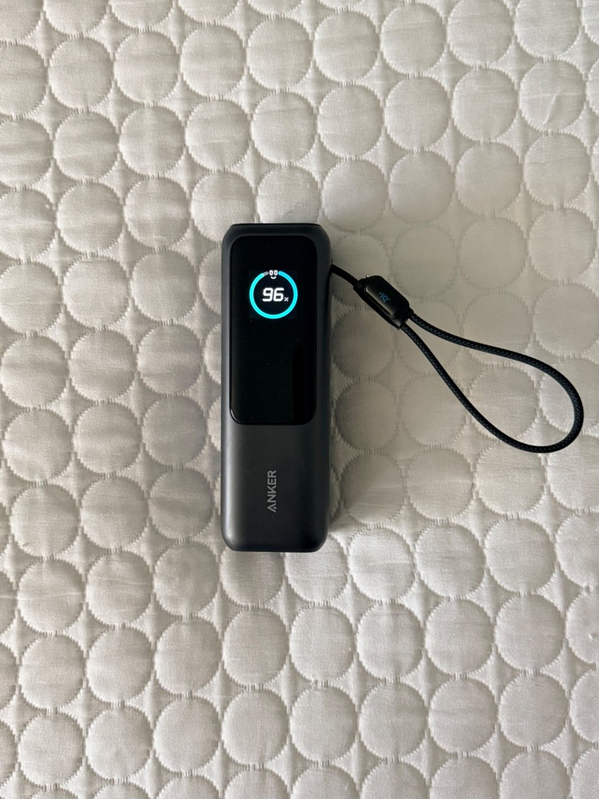

The portable charger I never travel without.
As an Amazon Associate, I earn from qualifying purchases.
Because I travel frequently, I usually carry two laptops, an iPad, and my iPhone with me. Keeping all of those devices charged can become a challenge, especially during long travel days.
This Anker 25,000mAh power bank solved that problem for me. Instead of carrying multiple charging bricks and worrying about finding power outlets, I carry one high-capacity portable charger that keeps my devices running throughout the day.
It's become one of the most useful items in my travel bag.
If you travel with multiple devices like I do, this power bank is worth every dollar. The convenience of carrying one powerful charger instead of several charging bricks has made traveling much easier for me.